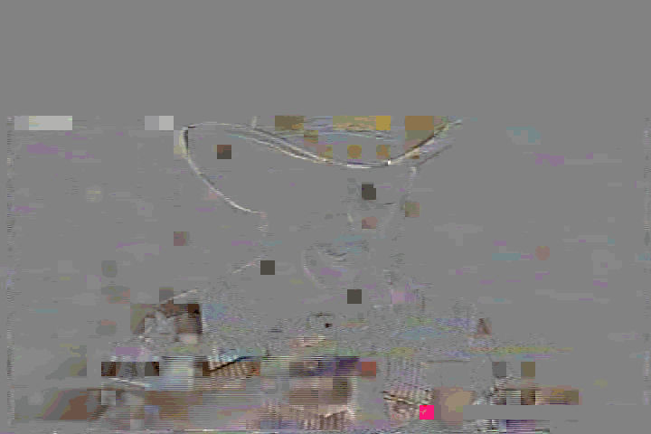
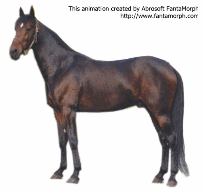

Transmuxing
Hi!!! I'm John Riske, and I love to talk about transmuxing.
If you'd like to talk about transmuxing, please get in touch!!!
Linkedin | Twitter
Don't let this happen to you!!! I can transmux anything!!! Ask me how...

My mad skillz don't stop at video formats
I can transmux this guy into food!!!
I can transmux this horse into a shorter horse!!!

I AM THE TRANSMUXING EXPERT!!!!!!!?! Please say hello.
Linkedin | Twitter
Made with HTML 3.0 for a mobile-first, responsive experience
Also Zencoder is the second best transmuxing expert.